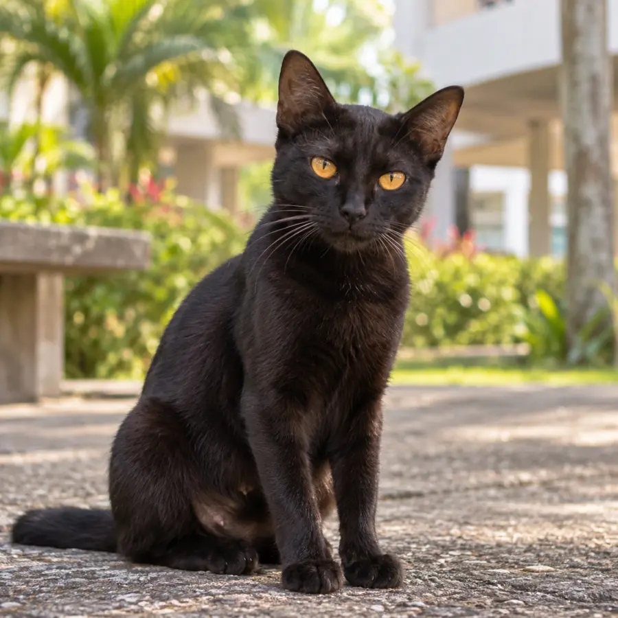

Resident Cat Journal · KVKS
They live
here too.
Tempat kita mengenali resident cats KVKS, berkongsi maklumat dan sama-sama menjaga kebajikan mereka.



01
Mereka mungkin tidak dimiliki sesiapa, tetapi mereka tetap tinggal bersama kita dan menjadi sebahagian daripada KVKS.
KVKScare · notice · remember
Apa yang kita buat bila nampak kucing perlukan perhatian
Nampak, maklumkan, pantau dan bantu
- 01NampakPerhatikan keadaannya
- 02MaklumkanKongsi maklumat yang jelas
- 03PantauLihat jika ada perubahan
- 04BantuSama-sama cari jalan
Direktori Resident Cats
Kenali resident cats KVKS.
Kenali Abdul dan kucing lain melalui foto. Nama panggilan dan kawasan biasa dilihat bagi kucing lain akan ditambah apabila maklumat disahkan.
Lihat direktori
Profil belum disahkan
Kucing hitam putih
Nama panggilan belum diketahui.
Jika kucing perlukan bantuan
Nampak kucing sakit atau cedera?
Ambil gambar dari jarak selamat, catat kawasan umum dan maklumkan kepada komuniti atau seseorang yang boleh membantu. Anda tidak perlu mengurus semuanya seorang diri.
Lihat panduan ringkasLaporan komuniti kini tersedia melalui grup WhatsApp.